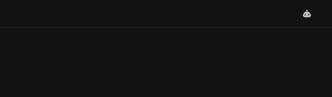
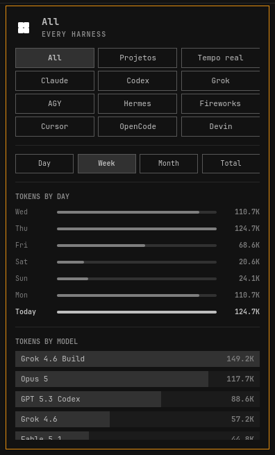
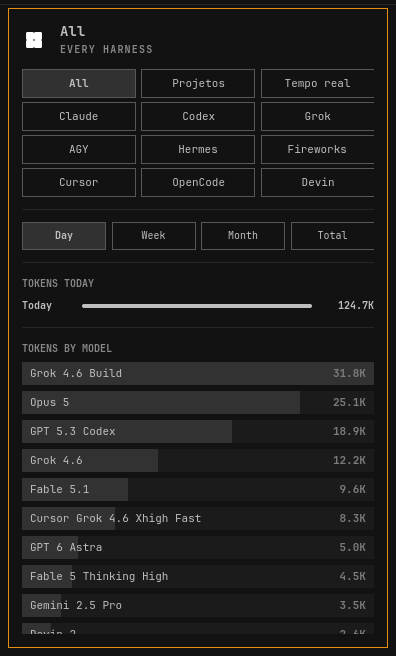
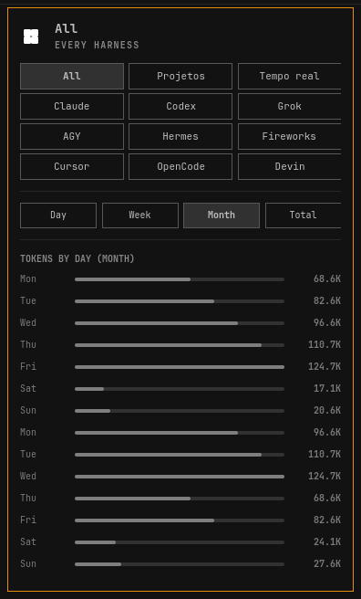
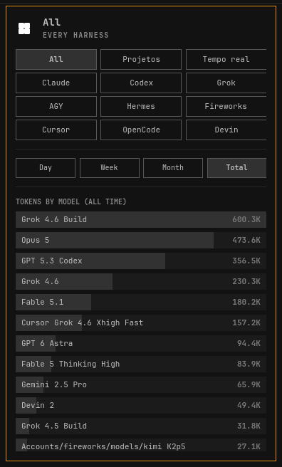
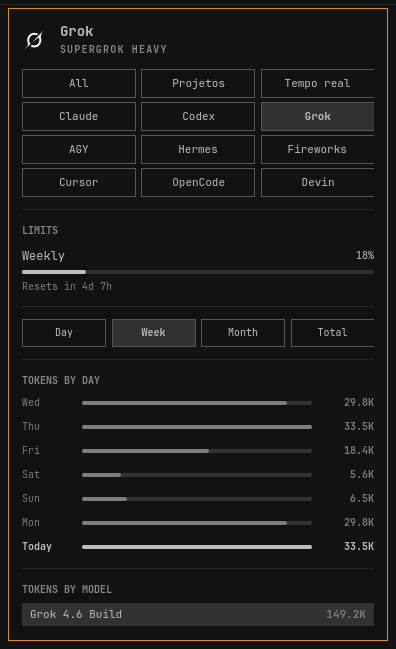
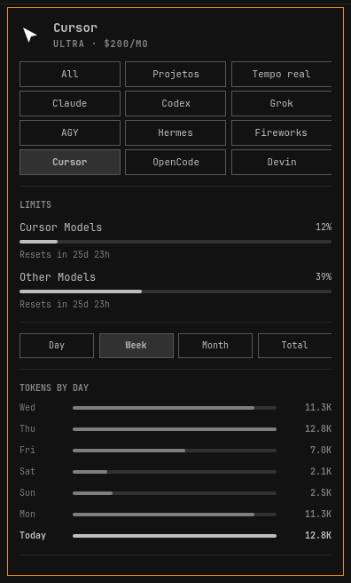
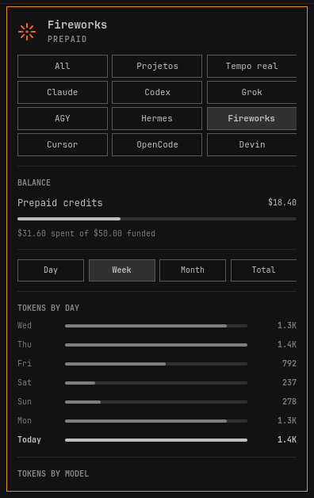
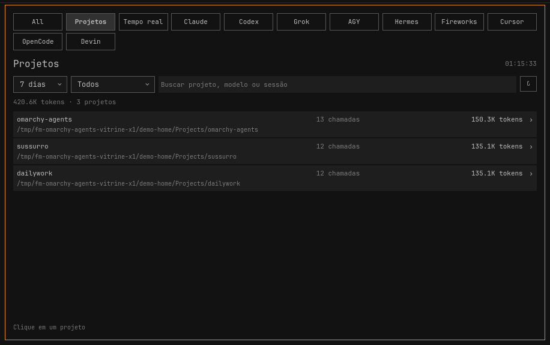
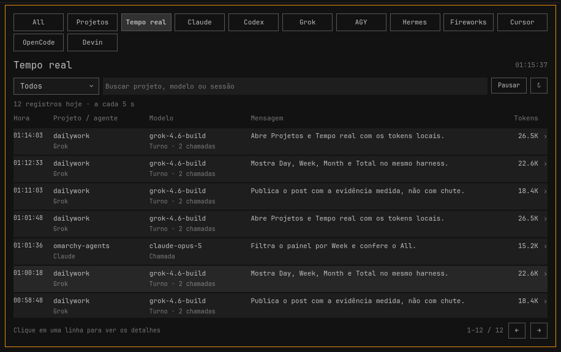

Plugin Omarchy · id lol.agents · v1.4.1
Stock mostra Claude, Codex e Fireworks na última semana. Este painel soma todo mundo na aba All, filtra Day / Week / Month / Total e abre as sessões locais em Projetos e Tempo real.
Narração: Lucas Oliveira, OFICIAL #1. Gravação do painel real numa instância de demonstração isolada, 15 set 2026. Nada simulado na edição.
Soma cada harness ligado. Cota continua por conta; o All não mistura limite de Claude com o de Grok.
Semana é o padrão. Total é o acumulado do coletor, não a janela da cota. Day não pinta leftover de ontem como hoje.
Grok, Antigravity, Hermes, Cursor, OpenCode e Devin, além de Claude, Codex e Fireworks que o stock já tinha.
O painel só desenha. Quem escreve os JSON é o updater, no disco local. Sem rede na inspeção de projeto.
No refresh, roda o updater stock e depois os extras em bin/. Cada harness vira um JSON em ~/.local/state/omarchy/agents/usage/.
Um ícone de robô. Clique esquerdo abre o painel, direito lança o agente, meio cicla a assinatura.
All / Claude / Codex / Grok / … e Day / Week / Month / Total. Atalhos 1 a 4 ou D W M T.
Projetos e Tempo real leem sessões locais. Prévia sob demanda. 9Router aparece no filtro e fica fora do total combinado.
Capturas do painel QML real, rodando com dados de demonstração na bancada. Não é mockup.
Um robô no canto direito. Some da barra se não houver uso. Aparece sozinho quando o primeiro JSON chega.
Fonte: Panel.qml (BarIconButton, launchAgent, selectProvider).

A aba All soma os nove harnesses. Week é o padrão: sete dias, Today em destaque, tokens por modelo do período. Sem fallback para o all-time.
Captura de 15 set 2026. Soma de recentDays nos 9 JSON da demo: 584.072 tokens na semana. Isso é a instância isolada, não o desktop ao vivo.

Só o calendário de hoje. O painel recusa leftover today* de arquivo que parou de ser reescrito. Foi assim que 585k de OpenCode de 6 set pintou como “hoje” no stock.
Fonte: README e tests/test_today_fields.py. Cabeçalho da captura: TOKENS TODAY.

Trinta dias. Dias sem mensagem somem da lista. O gráfico deixa de ser a semana chata do stock.
Fonte: Panel.qml daysForPeriod("month"), label TOKENS BY DAY (MONTH).

All-time do coletor, ou a janela que ele realmente cobre. Não é a cota semanal. O título vira TOKENS BY MODEL (ALL TIME).
Fonte: periodOptions em Panel.qml; README: “Total is all-time, not a quota window”.

Coletor extra. SuperGrok no pool semanal, tokens das sessões locais. Stock não tem essa aba.
Fonte: bin/omarchy-agent-usage-grok, README Collectors. Captura: SuperGrok Heavy, Weekly 18%.

Os mesmos meters de Settings: Cursor Models e Other Models. Sem carteira prepaid inventada a partir dos cents inclusos do Ultra.
Fonte: README “Cursor meters match Settings”; tests/test_cursor_usage.py. Captura: Ultra · $200/mo, 12% / 39%.

O stock já tinha Fireworks. Aqui o saldo prepaid aparece como combustível que esvazia, não como cota que enche.
Fonte: stock README (Fireworks balance) e Panel.qml seção BALANCE. Captura: $18.40 remaining of $50.00 funded.

Sessões locais, uma linha por repo. Sem rede. Clique abre o projeto. 9Router fica no filtro e fora do total, pra não contar o mesmo request duas vezes.
Fonte: Tracking.qml + bin/tracking.py. Captura da demo: 420,6K tokens · 3 projetos (omarchy-agents, sussurro, dailywork).

Atualiza a cada 5 s. Hora, projeto, modelo, prévia da mensagem, tokens. Clique na linha puxa o detalhe. Pausar existe.
Fonte: TrackingData.qml live: true, intervalo 5000 ms. Captura: 12 registros hoje na demo.

Contagem no checkout v1.4.1, não chute de marketing. Cada um aponta o arquivo.
A captura da demo somou 584.072 tokens na semana (soma de recentDays.messageCount nos 9 JSON em 15 set 2026). Isso descreve o vídeo, não o uso do desktop humano.
Stock é o plugin omarchy.agents 1.0.0 que vem no Omarchy. Este checkout é o fork que roda na barra como lol.agents.
| lol.agents 1.4.1 | omarchy.agents 1.0.0 | |
|---|---|---|
| Aba All | Soma todo harness ligado | Não tem. Uma aba por record. |
| Período | Day / Week / Month / Total | Últimos sete dias + today + modelos all-time |
| Coletores | Claude, Codex, Fireworks + Grok, AGY, Hermes, Cursor, OpenCode, Devin | Claude, Codex, Fireworks |
| Projetos / Tempo real | Sessões locais, prévia sob demanda | Não tem |
| today* velho | Ignora se updatedAt não é hoje | Pinta leftover como calendário hoje |
| Modelo no Day/Week/Month | Só history do período. Sem fallback all-time | Cai no modelUsage all-time quando falta breakdown |
| Cursor | Meters iguais ao Settings | Sem coletor |
| Plugin id | lol.agents | omarchy.agents |
Fontes, todas datadas: stock manifest.json 1.0.0 e README em /usr/share/omarchy/shell/plugins/agents/ (pacote Omarchy desta máquina, conferido em 15 set 2026: “Claude Code, Codex, and Fireworks”, “last seven days”); este repo manifest.json 1.4.1, README “What this fork adds”, Panel.qml, bin/; PR upstream omacom/omarchy#10400 aberto em 5 set 2026 (“Stock Omarchy’s Agents panel charts Claude, Codex, and Fireworks over the last seven days”).
Plugin Omarchy. Não tem binário pra baixar. Troca o widget da barra; se deixar os dois, ficam dois robôs.
# clona, habilita, confirma omarchy plugin add https://github.com/LucasOl1337/omarchy-agents.git --enable --yes
# em ~/.config/omarchy/shell.json # right: omarchy.agents → lol.agents # ou: omarchy plugin enable lol.agents \ --section right --after omarchy.tailscale
Depois tira omarchy.agents do layout. Clique esquerdo abre o painel. Código e licença MIT no GitHub. Tag atual do plugin: v1.4.1.